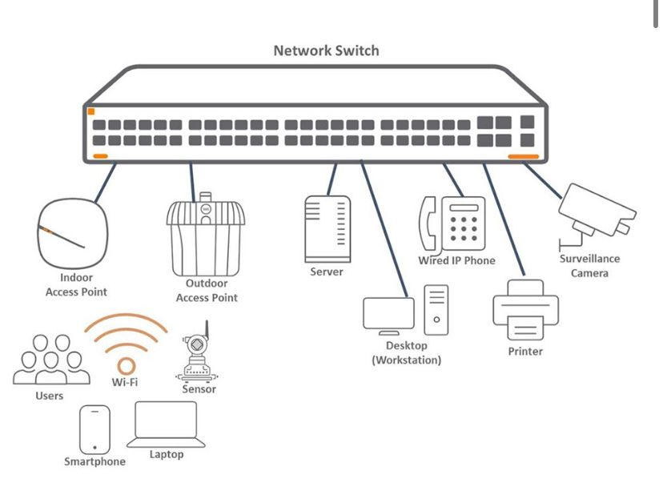

LO SCOPO DELLO SWITCH
Uno switch di rete è un moltiplicatore di porte che ci permette di estendere la nostra rete Lan attraverso porte supplementari, dal momento che un router possiede solo 4 o 8 porte RJ45.
Lo switch di rete è anche un hardware di rete che connette i dispositivi cablati su una rete usando uno switching di pacchetti per ricevere e inoltrare in modo intelligente i dati al dispositivo di destinazione.
definizione
lo switch di rete o ethernet è un componente hardware che fornisce connettività tra diversi dispositivi connessi alla rete e da loro la possibilità di scambiarsi pacchetti di informazioni in maniera intelligente.
Per scambiarsi i pacchetti di infomazioni vengono usate le porte fisiche presenti sui dispositivi, porte alle quali si collega il cavo LAN o ethernet.
All’edge della rete gli switch di rete forniscono connettività per molti dispositivi, tra cui access point, workstation e dispositivi IoT.
come funziona
Uno switch di rete consente la comunicazione tra dispositivi facendo in modo che tutti i sistemi collegati, compreso lo switch stesso, seguano una serie di protocolli di comunicazione standard.
Questi standard sono definiti e mantenuti da organizzazioni internazionali di standardizzazione, come l'Institute of Electrical and Electronics Engineers (IEEE) e l'Internet Engineering Task Force (IETF).
Esistono tre modi principali con cui i dispositivi possono connettersi a una rete: via radio (come accade per il Wi-Fi), tramite una connessione elettrica (come accade con l'Ethernet RJ-45) e grazie alla tecnologia ottica (basata sulla luce).
Ciascun metodo di connessione utilizza un diverso mezzo di interconnessione fisica della rete, rispettivamente lo spettro radio,
il cablaggio in rame e il cablaggio in fibra ottica, attraverso il quale i dispositivi informatici comunicano inviandosi un flusso di 1 e 0.
Gli standard di rete consentono di interpretare questi flussi di 1 e 0 nei pacchetti. I pacchetti contengono un'intestazione e un payload. Le intestazioni di pacchetto contengono informazioni come la sorgente e l'indirizzo di destinazione
dei dispositivi che stanno partecipando alla comunicazione.
I payload contengono i dati che i dispositivi di rete stanno effettivamente tentando di scambiarsi. Ogni dispositivo su una rete ha uno o più indirizzi a cui i pacchetti possono essere indirizzati.
I gruppi di pacchetti scambiati con due o più indirizzi vengono chiamati “flussi di dati”. I flussi di dati sono approssimativamente equivalenti a singole conversazioni tra i dispositivi della rete.
Uno switch legge gli indirizzi dalle intestazioni di pacchetto e inoltra i diversi pacchetti verso la loro destinazione.
Gli switch conservano dei record, ovvero, le tabelle di lookup (LUT). Le LUT contengono un elenco degli indirizzi che possono essere raggiunti utilizzando delle porte switch specifiche.
Alcuni switch, così come accade per tutti i router, possono essere configurati tramite “instradamenti”. Tali instradamenti sono un tipo di LUT che dirige gli switch per fare in modo che
tutti i pacchetti con una certa destinazione vengano inviati a uno switch o router intermedio.
Utilizzando tali instradamenti, gli switch possono inviare pacchetti ai dispositivi per cui lo switch non ha a disposizione informazioni relative all'indirizzo.
Andiamo a vedere nel dettaglio il modo in cui uno smartphone utilizza una rete Wi-Fi domestica per accedere a una pagina web. Lo smartphone si connette tramite Wi-Fi a un AP.
L'AP ha uno switch RJ-45/Ethernet integrato, il quale è connesso a un router Internet.

torna indietro